大模型蒸馏技术#
Author by：曾薇敏
为什么大模型需要蒸馏#
近年来，大语言模型（LLMs）迅速发展，以 GPT-5 与 Gemini 为代表的专有模型在参数规模和能力上持续突破，展现出涌现能力，能够处理远超其原始训练目标的任务，这些模型在上下文理解、复杂推理以及生成任务中表现卓越。然而，其高度闭源性与商业化属性带来了诸多限制：首先，可访问性有限和成本较高，使得个人和中小型组织难以承受；其次，使用过程中需将敏感数据传输至外部服务器，引发数据隐私与安全风险；最后，其通用性虽强，但缺乏对特定领域任务的适配性。因此，可访问性、成本和适应性方面的限制在充分发挥专有 LLMs 的潜力方面构成了重大挑战。
开源大模型因其开放性与可定制性而在人工智能研究中扮演着重要角色，使个人研究者和中小型组织能够以较低成本获取并应用先进模型。早期由于训练资源和数据规模的限制，开源模型在指令理解和复杂任务上的表现一度远落后于专有大模型。然而，随着大模型蒸馏技术的发展，这一差距正在快速缩小。通过知识蒸馏等技术手段，开源模型能够高效吸收专有模型的知识表示与推理模式，在很多下游任务上已能与专有模型接近。通过基于原理的知识蒸馏等复杂技术，可将思维链推理等新兴高阶能力转移给紧凑的学生模型，从而实现专业领域的高效部署和泛化。
大模型蒸馏不仅推动了开源模型在性能上的飞跃，也改善了其在计算效率、能耗和可部署性方面的表现。更重要的是，大模型蒸馏促进了人工智能的普惠化，使先进能力能够在更广泛的群体中传播与应用，推动了多样化和公平化的技术生态。
综上所述，对大型语言模型蒸馏的需求日益增长，源于人工智能领域（如 OpenAI 等）的快速演变以及这些模型复杂性的不断增加。随着人工智能不断渗透各个领域，将专有大型语言模型的知识高效有效地蒸馏到开源模型中的需求促使大模型蒸馏技术应运而生。这一需求是由对更易于获取、更具成本效益和适应性更强的 AI 解决方案日益增长的需求所驱动的，并且这些解决方案要能够满足各种特定垂直领域的应用需求。随着人工智能技术持续扩展至各个行业，大模型蒸馏已成为平衡性能、成本与安全性的必要手段，也是推动人工智能生态可持续发展的重要驱动力。
什么是大模型蒸馏#
知识蒸馏是人工智能与深度学习领域的一项核心技术，其本质在于将大型复杂模型中的知识与能力迁移到更小、更高效的模型之中。这一过程源于早期的神经网络研究，最初的目标是通过模仿教师模型的输出，来训练出能够在资源受限环境中部署的学生模型。
随着大语言模型的兴起，知识蒸馏（KD）在大型语言模型（LLMs）中发挥着三个关键作用：
主要为了增强能力（advance），即通过从教师模型中提取和迁移知识，使学生模型能够掌握更高层次的推理与认知模式；
提供传统的压缩作用（compress），在保持性能的同时减少模型规模和计算开销，提高运行效率；
一种新兴趋势是通过自我生成知识实现自我改进（self-improvement），即利用模型自身生成的数据不断迭代训练，从而实现能力的持续提升。

LLMs 的通用知识蒸馏流程是⼀个结构化、系统化的过程，旨在将知识从复杂的教师模型迁移到较简单的学⽣模型。如下图所示，整体流程可分为四个阶段，每一阶段均对应着蒸馏在不同功能维度上的作用。

第一阶段是目标技能或领域的引导。教师模型通过提示或模板被聚焦到特定的知识范围或能力类型。与早期的无差别模仿不同，这一过程强调对教师知识的定向挖掘。例如，将教师模型限定在医学、法律等专业领域，或推理、语言理解等能力上。
第二阶段是种子知识的注入。种子知识通常是小规模的输入数据集，包含与目标领域相关的少量知识实例或线索。其作用是为教师模型提供生成的起点，使其能够基于有限的输入扩展出更大规模、更系统的训练样本。
第三阶段是蒸馏知识的生成。教师模型在指令和种子知识的引导下，生成符合目标领域的示例。示例不仅包括答案，还可能包含推理链条与解释性内容。教师模型将自身的隐性推理能力外化为显性数据，使学生模型能够从中学习如何进行复杂思考。
第四阶段是学生模型的训练与优化。生成的蒸馏数据被用作训练语料，学生模型在损失函数的约束下不断调整参数，以最小化与教师输出之间的差异。
总体而言，大模型蒸馏流程是一个多维度的知识迁移框架。它通过目标引导和种子扩展实现能力拓展，通过训练优化实现性能压缩。随着开源大模型的发展，蒸馏已不再局限于单向的“教师—学生”模式。利用开源模型自身作为教师角色，通过生成数据和自蒸馏的方式不断迭代更新已经成为新的趋势。
主流蒸馏方法分类#
当前，针对大规模语言模型的知识蒸馏方法呈现多样化趋势，下面是一些比较典型的大模型蒸馏的类别。
稀疏→稠密蒸馏：稀疏→稠密蒸馏指使用稀疏的混合专家（Mixture-of-Experts, MoE）教师模型，将其知识迁移到结构致密的学生模型的过程。
典型流程通常分为知识聚合和标准蒸馏两阶段，先将不同专家的知识（如参数或输出）进行汇总，即聚合预训练专家知识，然后再通过常规的蒸馏损失对学生模型进行微调。知识聚合方式包括线性叠加和层次融合等。常用知识聚合策略包括对专家参数加权求和、取平均、Top-K 聚合或奇异值分解等方式收集知识，然后以 KL 散度等蒸馏损失细化学生。目标是在保持高性能的同时，获得一个硬件友好的稠密模型。此外，针对 MoE 特性，还有方法（“Every Expert Matters”）提出了专用的蒸馏机制，通过知识增强（KA）学生感知路由器（SAR）未激活专家的知识，让学生模型能更有效地利用所有专家的输出，这在 ROUGE-L 等指令遵循评估中被证明能显著优于常规 KD 基线方法。
多模态蒸馏：多模态蒸馏指从包含多种模态信息（如视觉+语言）的教师模型向学生模型传递跨模态知识的过程。其基本机制通常包括对不同模态的表示进行对齐和融合，以使学生学习教师在视觉、语言等任务上的综合能力。
常见方法需要设计多模态对齐损失，包括跨模态表示对齐蒸馏和模态间关系蒸馏等，如表示对齐蒸馏通过最小化视觉和语言特征的距离（例如LLaVA-KD中的MDist将视觉表征与语言表征对齐）；关系蒸馏则关注元素之间的关系保持（如LLaVA-KD中的RDist对视觉令牌关系进行学习）。训练策略包括联合蒸馏和分阶段蒸馏，LLaVA-KD采用三阶段训练（蒸馏预训练、监督微调、蒸馏微调），并结合多模态输出蒸馏（MDist）和视觉关系蒸馏（RDist），以同时对齐学生模型的视觉特征和输出分布。有方法采用基于隐式视觉知识的方案，如VIKDF (Visual Implicit Knowledge Distillation Framework) 通过 IQ-Former 提取视觉隐式知识，并利用 BVIF 技术将知识融入 LLM，使其能够生成连贯、富有情境理解的对上表展示了Distinct-4 指标和语言模型损失（多样性分析）。
数据蒸馏：“数据蒸馏”是数据增强 (Data Augmentation, DA) 与 KD 框架结合的一种强大范式，包括数据集蒸馏，伪标签数据蒸馏，合成数据蒸馏，任务驱动数据蒸馏等。数据集蒸馏旨在将大规模训练集压缩为极小的合成样本集合，同时保留原数据的训练效果，即一个教师 LLM 在庞大的原始数据库上进行训练。通过数据集蒸馏，合成一个紧凑、高质量的子集（蒸馏数据库），以保留关键知识，然后使用这个较小的数据集来训练学生 LLM，旨在达到与教师相似的性能，同时需要显著更少的数据。
数据蒸馏方法主要可分为基于优化的数据压缩与合成样本生成两大类。前者采用梯度匹配、轨迹匹配等元学习技术迭代优化小数据集，使学生在该数据上训练时近似原数据训练效果；后者则利用生成模型或教师模型反演等手段直接合成语料（如使用MMD匹配分布或Prompt引导大模型生成数据）。另一种趋势是提示驱动的合成数据，通过设计提示词让大模型生成任务相关的伪标注数据，以此训练学生。如 UltraChat通过收集跨领域（如关于世界的提问、创作与生成、现有材料协助）的元信息，指导教师 LLM 蒸馏出具有词汇和主题多样性的大规模指令和对话数据。还有Phi 系列 (Phi-1, Phi-1.5)，其专注于蒸馏“教科书质量”的数据集，例如在编码领域，蒸馏出清晰、独立、具有指导意义且平衡的内容，以小数据集实现卓越性能。
与RL结合：结合强化学习的蒸馏在学生模型训练中同时引入教师监督和环境奖励，将知识蒸馏和强化学习目标统一优化。实验证明相比单独使用RL或KD，联合训练能更高效地提升模型推理能力。例如，LLMR方法通过从教师LLM的预测概率导出q值并构造奖励函数，然后用策略梯度方法让学生根据该奖励进行训练，使用反向散度缓解了暴露偏差问题。类似地，DeepSeek团队使用基于RL优化的教师模型生成高质量推理示例，然后通过传统的监督蒸馏让小模型学习这些知识。
该类方法需要设计联合损失或奖励塑形，将蒸馏损失（如KL散度）与环境回报结合。奖励塑形是指在原始奖励中加入教师监督得到的KL项，使学生的策略优化既考虑任务回报也模仿教师；联合损失优化是指将传统交叉熵或KL蒸馏损失作为RL的辅助损失同时最小化。直接偏好优化（Direct Preference Optimization）DPO 是一种简化 RL 目标的方法，它将涉及奖励最大化和 KL 散度约束的强化学习目标流线化为单阶段的策略训练。例如，Zephyr 模型 就利用 DPO 蒸馏教师 LLM 中的偏好对齐知识。
主流大模型蒸馏算法与效果#
MiniLLM#
MiniLLM 框架的核心方法的整体思路是将蒸馏目标从传统的正向 KL 散度替换为反向 KL 散度（RKL），这一机制被应用于白盒知识蒸馏，避免学生模型高估教师分布的长尾概率。其通过策略梯度推导，并设计了三项关键策略——单步分解（减少方差，通过精确期望计算单步质量）、教师混合采样（抑制奖励作弊，提高采样质量）以及长度归一化（解决长度偏差，避免偏好短文本）。在不同模型族与多种规模上，系统性地评估了 MiniLLM 框架的性能。结果显示，MiniLLM 在生成质量、长文本一致性、概率校准性（ECE 低）等方面显著优于传统 KD 和 SFT，并且通过在策略采样有效缓解了暴露偏差。MiniLLM 的性能与教师模型规模呈正相关，部分学生模型甚至超过教师模型表现。
传统KD方法普遍基于正向KL散度\(KL[p‖q]\) 作为优化目标，即令学生模型尽可能覆盖教师模型的概率分布。这种“模式覆盖（mode-covering）”特性在分类任务中通常有效，但在开放式文本生成任务中却带来了严重问题：教师模型的分布往往包含大量长尾模式，而学生模型容量有限，被迫去拟合低概率区域，容易导致生成质量下降。更具体而言，学生模型在训练时过度追逐教师的长尾分布，推理时则表现为暴露偏差（exposure bias）、文本不连贯以及生成内容的置信度偏差。以反向KL散度\(KL[q‖p]\)替代正向KL散度作为蒸馏目标。与正向KL的模式覆盖不同，反向KL具有模式寻求（mode-seeking） 的特性，使学生模型更专注于教师分布的高概率区域，而非追逐长尾噪声。
算法简介：
MiniLLM 的蒸馏流程可概括为以下几个关键步骤：首先在输入与初始化阶段，准备指令数据集 D（用于蒸馏对齐）、预训练语料 \(D_{PT}\)（保持语言建模能力）、教师模型 p、以及已在 \(D_{PT}\) 上预训练的学生模型 \(q_{θ0}\)，并设定学习率、批大小和梯度裁剪阈值等超参数。通过这一流程，学生模型不仅继承了教师分布的高概率模式，还在长文本生成、一致性与校准性上超越了传统蒸馏方法为了让学生模型具备基本的指令遵循能力，算法先在 D 上进行一次监督微调，选取验证集损失最低的参数 θ 作为起点。进入核心的迭代蒸馏阶段，每轮训练会从 D 中采样提示并获取教师响应，同时从\(D_{PT}\)中采样长文档文本。接着计算三类梯度：一是基于反向 KL 的单步分解梯度；二是长度归一化梯度；三是语言建模梯度。最后，将这三类梯度（以及PPO 风格的裁剪）结合起来更新参数 θ，不断迭代直至收敛。

实验结果：

上图所示为评估结果。GPT4 和 R-L 分别表示在 5 个随机种子下的 GPT-4 平均反馈分数和 Rouge-L 分数。每种模型规模的最佳分数用加粗字体表示，当学生模型表现超过教师模型，其分数则标记为 *。
实验结果表明，MiniLLM 在多个规模和模型族下均显著优于基线方法。与传统 KD 和 SeqKD 相比，MiniLLM 更好地对齐教师分布，在 Rouge-L 和 GPT-4 偏好评测中均取得领先。在部分规模下（如 GPT-2 760M 的学生模型），MiniLLM 的表现甚至超过了对应的教师模型。MiniLLM 生成的文本在流畅性、相关性和逻辑性上普遍优于 SFT、KD 与 SeqKD。
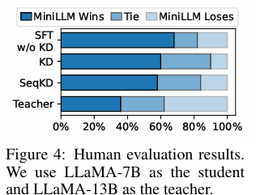
如上图，基于 LLaMA 系列模型，在 SelfInst 数据集上的结果中，MiniLLM 在人类偏好方面优于所有基线方法，并与教师模型表现相当。
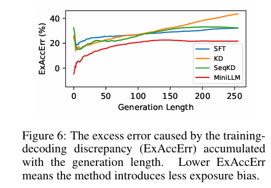
上图是训练-解码差异导致的累积超额错误（ExAccErr）随生成长度的变化，MiniLLM 的 ExAccErr 显著更低，并在长文本生成（>150 tokens）中误差停止累积，表明反向 KL 的模式寻求特性有效缓解了暴露偏差。
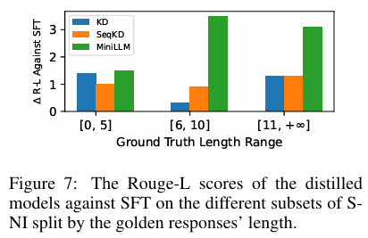
上图是在S-NI 数据集上按响应长度划分的子集上，蒸馏模型相对于 SFT 的 Rouge-L 评分。在需要较长响应（≥6 tokens）的任务中，MiniLLM 相比标准 KD 模型显示出明显优势，但在短响应任务上性能相似。
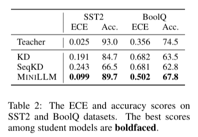
上表是SST2 和 BoolQ 数据集上的 ECE（Expected Calibration Error） 和准确率得分（校准性分析）。MiniLLM 的校准性显著优于基线方法（ECE 更低），并且准确率更高。
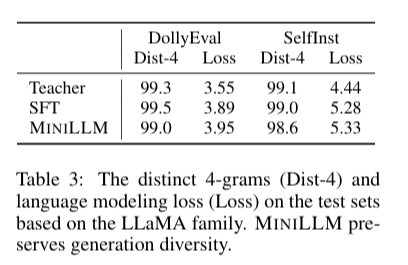
上表展示了Distinct-4 指标和语言模型损失（多样性分析）。在 Distinct-4 指标上，MiniLLM 与基线方法相近，说明反向 KL 的模式寻求特性并未导致明显的模式坍缩。学生模型既能保证生成质量，也能维持基本的多样性。
实验结果清晰地展示了 MiniLLM 框架的有效性与稳健性。通过引入反向 KL 与三项稳定训练策略，MiniLLM 不仅在整体生成质量上超过传统蒸馏方法，还显著改善了长文本一致性与概率校准。同时，学生模型的多样性未受到明显削弱，表明模式寻求与生成多样性之间可以取得良好平衡。
LM-Cocktail（混合专家）#
针对预训练语言模型（LM）微调后通用能力显著退化（即灾难性遗忘）的问题，LM-Cocktail被提出以增强微调模型的通用弹性(即具备通用性和专业性)。该技术的核心思路是模型合并（model merging）。它通过加权平均的方式，合并目标任务微调模型、预训练基础模型，以及来自其他领域的同类模型。其中，合并权重可以基于目标域的少量（例如 5 个）验证示例的预测损失自动计算。实验结果表明，LM-Cocktail在Llama和BGE等模型上表现出惊人的有效性。它能够在维持目标任务卓越性能的同时，显著提升模型在FLAN、MMLU和MTEB等通用任务上的表现和弹性。该方法适用于基于解码器和基于编码器的LM，且具有极简和兼容的优势。
在大模型的压缩与迁移中，LM-Cocktail 与知识蒸馏常以互补方式结合使用，包括蒸馏前融合，即先将多个教师模型的参数融合成综合教师，再通过 SFT、RLHF 或 DPO 等方法训练学生模型，以实现教师知识的统一；蒸馏后融合，即先分别蒸馏出多个小模型，再通过参数融合提升泛化性与稳定性；以及动态融合蒸馏，在蒸馏过程中动态调整模型融合比例，实现多源教师知识的持续注入（如 MergeKD, 2024）。
技术范式:
LM-Cocktail被设计为一个通用范式，能够融合多来源的模型权重以恢复通用性能。该范式的前提条件是具备一个为通用应用而预训练的基础语言模型 \(\mathcal{m}_{b}\)，以及针对特定目标任务 \(t\) 利用领域特定数据 \(\boldsymbol{X}_{t}\) 微调得到的专家模型 \(\mathcal{m}_{t}\)。为增强通用弹性，LM-Cocktail 将目标任务的专家模型与包括基础模型在内的其他领域专家模型 \(\{\mathcal{m}_{d}\}_\mathcal{D}\) 进行加权合并。最终得到的通用弹性模型 \(\mathcal{m}_{r}\) 的权重通过以下通用合并函数确定：
其中，\({m}_{r}\) 代表弹性模型，\(\alpha\) 是一个超参数（默认值为 0.5）。公式（1）将目标任务微调模型 \({m}_{t}\) 与其他候选模型进行组合，其中 \(w_{i}\) 代表归一化后的合并权重，需满足 \(\sum_{i}w_{i}=1\)。
LM-Cocktail的核心关键之一是如何自动且高效地确定合并权重 \(w_{i}\)。由于弹性模型 \({m}_{r}\) 需要在保留目标域卓越性能的同时提升通用领域的表现，因此候选模型在目标域的性能成为分配合并权重的关键指标。LM-Cocktail 引入了一种基于目标任务少量（few-shot）验证样本 \(e_{t}\) 的预测损失来计算权重的方法。该机制通过 softmax 函数，将损失值转化为权重分配：
在该公式中，\(\mathcal{l}({m}_{i},e_{t})\) 表示候选模型 \({m}_{i}\) 在目标域 \(t\) 的少量验证样本 \(e_{t}\) 上的预测损失，而 \(\tau\) 是控制平滑度的温度参数。该损失驱动的权重分配机制确保了在目标任务上表现较差（即损失较大）的候选模型将被分配较小的系数，从而保障了合并后的模型在目标任务上的性能不会因融合低效模型而降低。根据实验，仅使用 5 个少量样本就足以达到有竞争力的结果。
LM-Cocktail的通用范式可以根据实际资源限制进行调整。在最简单的情况下，即单专家模型（Mono-Specialist）场景，如果缺少其他通用领域的专家模型，合并函数将简化为仅合并目标模型 \(m_t\) 与基础模型 \(m_b\) 的形式： $\( m_r \leftarrow \alpha m_t + (1 - \alpha) m_b \quad(3) \)$
在这种情况下，通常直接采用超参数 \(\alpha\) 来控制两者权重（例如 \(\alpha=0.5\)），而不需要使用损失计算。此外，即使在目标域缺乏训练数据无法进行微调的情况下，LM-Cocktail 仍然可以应用，通过合并基础模型和现有通用领域专家模型，仅利用少量目标域验证样本 \(e_t\) 计算权重，即可为下游任务生成定制模型，这一过程避免了训练新模型的成本。LM-cocktail的实验结果验证了其通用适用性，它能对基于解码器（如 LLaMA）和基于编码器（如 BGE）的语言模型都做出实质性贡献。
LM-Cocktail框架之所以在实践中备受关注，源于其独特的设计所带来的多项核心优势，主要是以下几点：
极其简单 (Extremely Simple)
该方法无需进行昂贵的额外训练，模型合并的权重可以直接通过在少量验证样本上进行推理来计算，操作流程极为简便。
完全兼容 (Fully Compatible)
LM-Cocktail可以作为一个独立的“后处理”步骤，无缝集成到任何现有的模型微调工作流中，无需对既有流程进行任何修改。
富有竞争力 (Empirically Competitive)
大量实验证明，通过该方法生成的模型，既能在目标专业领域保持与原始微调模型相媲美的卓越性能，又能在通用任务上实现强大的性能恢复。
普遍适用 (Universally Applicable)
该框架的有效性不仅限于特定类型的模型架构，它已被证实对解码器模型（Decoder-based LMs，常用于文本生成）和编码器模型（Encoder-based LMs，常用于文本表示）均有显著效果。
这些优势得到了广泛的实证分析支持，下一节我们介绍相关的实验数据与关键发现。
LM-Cocktail 实验结果分析:
LM-Cocktail 的实验结果通过对基于解码器的 LLaMA 模型和基于编码器的 BGE 模型进行全面评估，证实了其有效性和通用适用性。
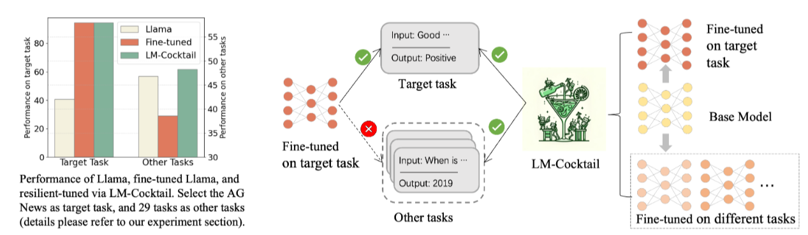
上图直观地说明了微调会导致通用能力显著退化，而 LM-Cocktail 能够在提高目标任务准确性的同时，保持甚至增强模型在其他不相关任务上的准确性。
在针对特定任务进行微调的场景中，实验对比了基础模型（Base）、微调模型（Fine-tuned）和两种 LM-Cocktail 变体（LM-Cocktail\(_{2}\) 和 LM-Cocktail\(_{10}\)）的性能。
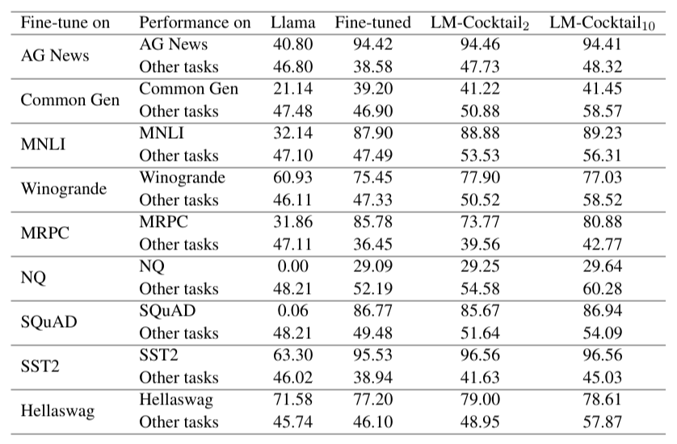
以上表 Llama 的结果为例，虽然微调模型在目标任务（如 AG News）上实现了显著提升（从 40.80% 升至 94.42%），但其在剩余的 29 个“其他任务”上的平均准确率大幅下降（从 46.80% 降至 38.58%），验证了灾难性遗忘的存在。相比之下，LM-Cocktail\(_{2}\)（合并基础模型和微调模型）在目标任务上保持了高准确率（94.46%），同时显著恢复了“其他任务”的性能（升至 47.73%）。而融合了更多专家模型的 LM-Cocktail\(_{10}\) 则进一步将通用任务的性能提升至 48.32%，在多数情况下甚至超越了原始的基础模型。
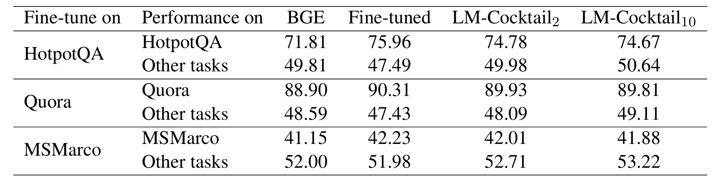
上表针对编码器模型 BGE 进行了类似的分析，观察到了相同的趋势：LM-Cocktail\(_{2}\) 和 LM-Cocktail\(_{10}\) 成功地在保持下游任务性能的同时，提高了模型在其他不相关任务上的表现，验证了 LM-Cocktail 对表示模型和生成模型的普适性。此外，图 2 展示了在最简配置（仅合并基础模型和微调模型）下，通过调整微调模型权重 \(\alpha\) 可以发现在目标任务性能不下降的前提下，显著提高模型在其他任务上的准确性，甚至超越基础模型。
LM-Cocktail的另一关键优势是其在目标域缺乏微调数据时的应用能力（Without Fine-tuning）。在这种情境下，该方法通过合并现有的基础模型和通用领域专家模型，利用少量（few-shot）目标域验证样本计算合并权重。
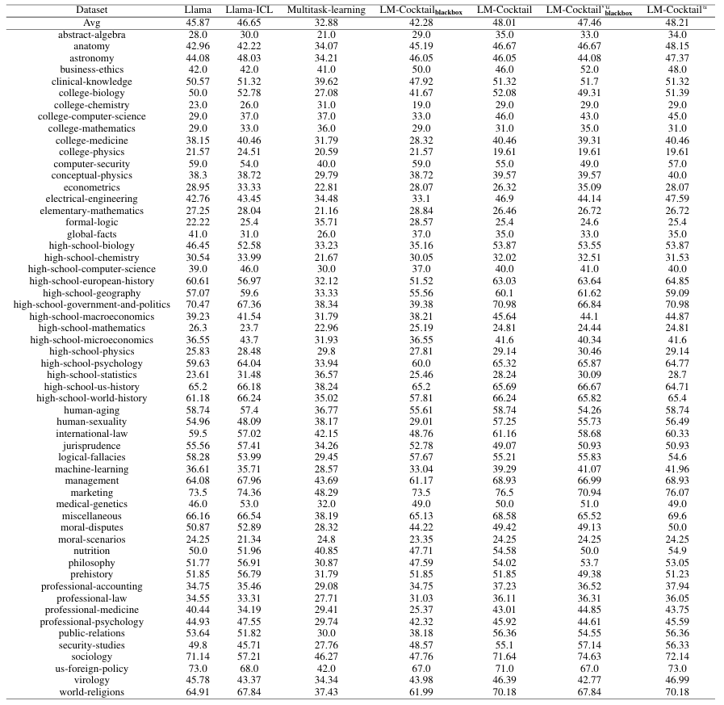
上表展示了在 MMLU 基准测试（包含 57 个未在微调中出现的任务）上的结果，LM-Cocktail 在平均准确率上显著优于 Llama 基础模型和 Llama-ICL（上下文学习）方法。这证明 LM-Cocktail 仅通过重组现有模型，无需额外训练，即可实现性能的显著提升，且不增加推理延迟。
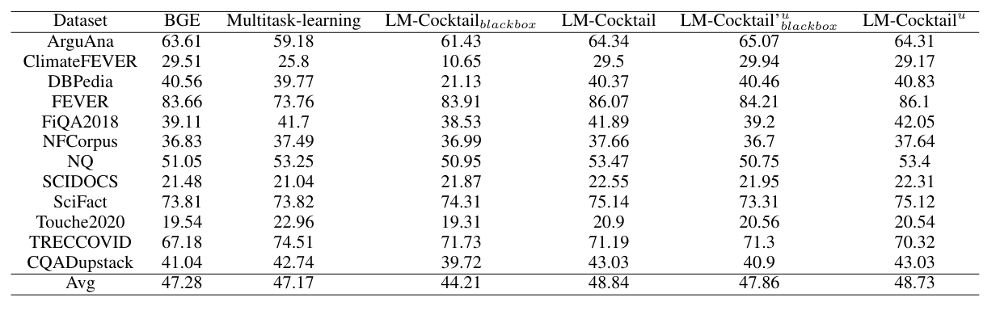
上表验证了该方法对于编码器模型 BGE 同样有效，通过混合现有模型即可提高新任务的准确性。关于模型合并所需少量示例的数量。
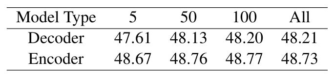
上表的分析显示，仅使用 5 个示例就可以获得令人满意的性能，并且性能提升在超过 50 个示例后变得十分有限，展示了该方法在数据效率上的竞争力。
综上所述，LM-Cocktail 是一种极简且兼容的模型合并技术，能够有效地解决预训练模型在微调中普遍存在的灾难性遗忘问题。实验结果一致证明，无论是针对基于解码器的 Llama 还是基于编码器的 BGE，无论是具备目标任务微调数据还是完全缺乏训练数据，LM-Cocktail 都能在维持目标域卓越性能的同时，显著提升或恢复模型在广泛通用任务上的弹性，且不涉及昂贵的重新训练成本。
SDD(尺度解耦蒸馏)#
**尺度解耦蒸馏（Scale Decoupled Distillation, SDD）**是一种新型知识蒸馏方法，旨在突破传统基于Logit蒸馏的结构性限制。以往的蒸馏仅利用教师网络的全局Logit作为知识迁移信号，这种方式将图像不同区域的语义信息耦合在一起，导致学生网络学习到模糊甚至相互冲突的特征表示，尤其在处理多语义或相似类别样本时表现不佳。
SDD的核心创新在于在空间尺度上对Logit进行解耦。通过将全局Logit分解为若干多尺度局部Logit，SDD为每个局部区域建立独立的蒸馏通道，使学生网络能够更细粒度地继承教师的语义知识。这一解耦策略显著减少了语义干扰，使知识传递更加明确。
此外，SDD将局部知识划分为一致性知识与互补性知识。一致性知识描述与全局预测相符的区域特征，而互补性知识则保留语义模糊性和不确定性。通过对互补性知识赋予更高权重，SDD引导学生关注难分类样本，提升了模型的判别鲁棒性。实验证明，该方法在CIFAR-100、ImageNet和CUB200等数据集上显著优于传统KD、DKD和NKD等Logit蒸馏方法，尤其在细粒度分类场景中表现突出。值得注意的是，SDD无需增加额外的结构或计算开销，保持了与传统蒸馏方法相当的效率。
多尺度池化与信息加权：
SDD通过多尺度池化（multi-scale pooling） 和 信息加权（information weighting） 实现知识的结构化迁移。
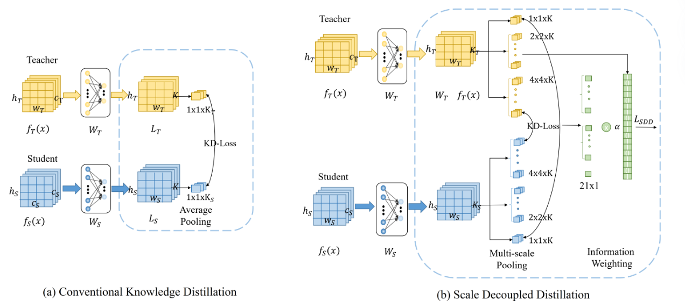
上图是传统知识蒸馏（KD）（a）和 SDD方法（b）的示意图。与仅通过全局平均池化考虑全局 logit 知识的传统 KD 相比，SDD 提出通过多尺度池化捕获多尺度 logit 知识，以便学生可以从教师那里继承细粒度和明确语义知识。
在每个尺度与位置上，SDD分别构建教师与学生的Logit对应对，并独立计算蒸馏损失，从而实现层次化的知识传递。对于每个局部Logit，若其预测类别与全局预测一致，则视为一致性知识，否则为互补性知识。前者强化主类别的多尺度语义表达，后者则提供跨类别的辅助判别信号，帮助学生网络识别模糊样本与边界区域。
为突出互补性知识的作用，SDD引入加权损失设计。整体蒸馏目标可表示为：
\(\mathcal{L}_{SDD} = \mathcal{D}_{con} + \beta \mathcal{D}_{com}\)
其中，\(\mathcal{D}_{con}\)表示一致性知识的蒸馏损失，\(\mathcal{D}_{com}\)为互补性知识的损失项，\(\beta > 1\)控制两者的权重平衡。通过适当提升\(\beta\)，SDD使学生模型更加关注局部与全局预测不一致的模糊样本，从而提升整体判别能力与泛化性能。
实验结果：
SDD在多个基准数据集上进行了广泛而严格的评估，实验结果全面地展示了其超越传统 Logit 蒸馏方法的优越性和有效性。
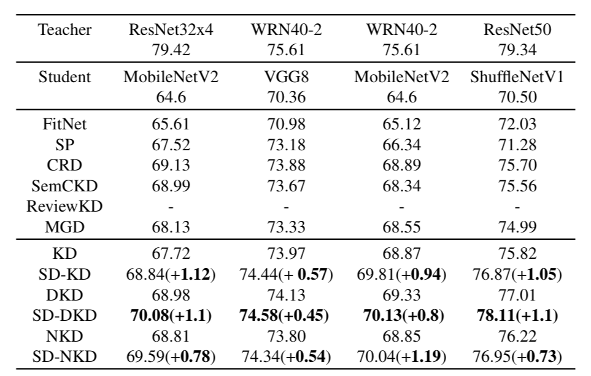
上图展示了CIFAR-100 上的模型蒸馏后的性能，对比了在不同网络结构和层数的教师/学生对（如 ResNet32x4/MobileNetV2）下，SD-KD、SD-DKD、SD-NKD 等与传统 KD 方法的 Top-1 准确率。结果显示 SDD 始终能为 KD、DKD 和 NKD 带来显著的性能提升（近 1%），证明 SDD 在处理网络结构和层数不同的教师-学生对时是有效的。
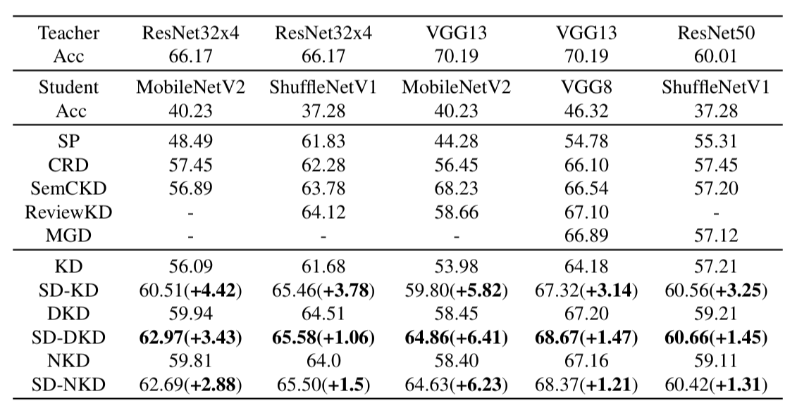
上图是不同方法在CUB200 数据集上的性能，对比了 SDD 在细粒度分类任务中的性能。SDD 在该任务上带来了 1.06% 到 6.41% 的显著提升。这表明 SDD 能够捕获局部细粒度的语义信息，这对细粒度分类至关重要。
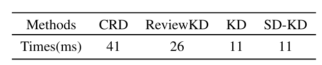
上图是不同方法的训练效率对比，对比了 SD-KD 与 CRD、ReviewKD、KD 的每批次训练时间（毫秒）。结果显示 SD-KD 的训练时间与传统 KD 相同，且低于基于特征的蒸馏方法（如 CRD 和 ReviewKD）。这证明了 SDD 具有很高的计算效率。
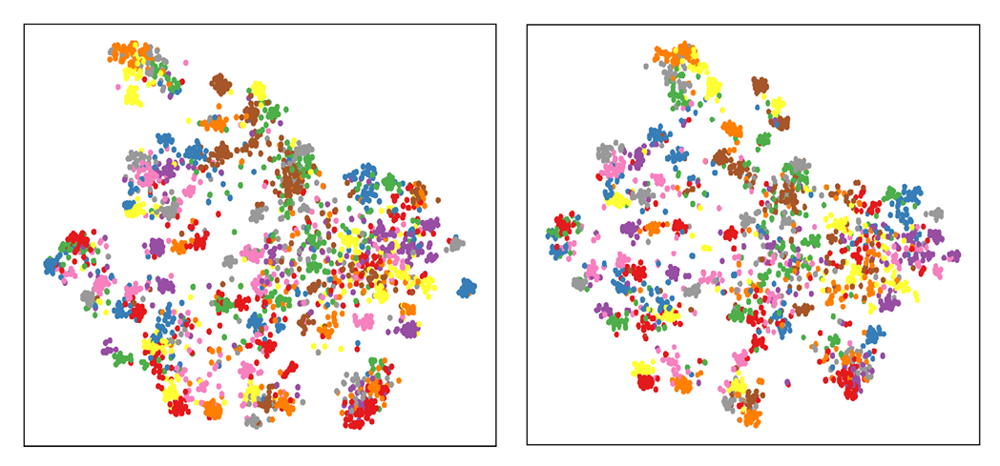
上图是对比了 KD（左）和 SD-KD（右）学习到的特征的 t-SNE 投影图。SD-KD 学习到的特征表示比 KD 更具可分离性，表明 SDD 能够增强学生网络的判别能力。
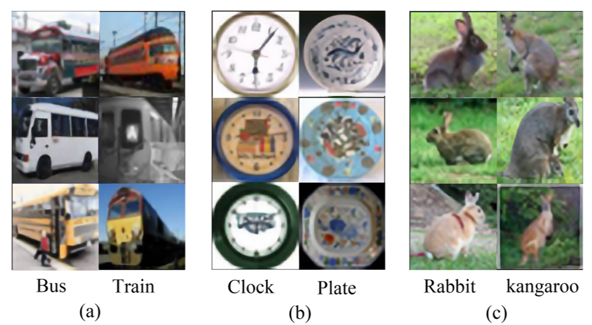
上图是SD-KD 正确分类的模糊样本示例，即 SD-KD 训练的学生网络能正确分类，但传统 KD 训练的学生网络错误分类的一些样本。这些样本通常是在全局语义上相似的模糊样本 。这验证了 SDD 可以帮助学生获取局部区域的细粒度语义信息，从而提高其对模糊样本的判别能力。
(这里添加一段实验总结)
总结：（这里换掉，换成对四种方法的总结）
该方法重新审视了基于 Logit 的知识蒸馏范式，指出全局 Logit 中的语义耦合问题限制了知识迁移的有效性。为解决这一问题，研究者提出了 Scale-Decoupled Distillation（SDD） 方法，通过将全局 Logit 解耦为多个局部 Logit 输出，在空间尺度上实现细粒度的语义建模与知识传递。进一步地，SDD 将解耦后的知识划分为一致性知识与互补性知识两类，前者用于传递主要语义信息，后者用于保留样本的语义模糊性。通过对互补性部分赋予更高权重，SDD 能引导学生模型更加关注难以区分的模糊样本，从而提升整体判别能力与泛化性能。大量实验结果表明，SDD 在多种教师–学生模型组合中均取得显著性能提升，尤其在细粒度分类任务中展现出更强的稳定性与适应性。
蒸馏效果评估#
评估蒸馏效果的核心问题在于，压缩后的学生模型是否在性能、鲁棒性与一致性等方面仍具备足够的可靠性。尤其值得关注的是，过度的知识蒸馏可能导致学生模型与教师模型产生同质化（Homogenization），并可能损害模型的鲁棒性。因此，量化蒸馏的程度（即评估学生模型对教师模型知识的依赖程度和知识转移的性质）变得至关重要。接下来本文将从性能评估、生成质量、相似性度量与鲁棒性分析等维度，系统梳理当前主流的蒸馏效果评估方法。
性能与生成质量评估#
在蒸馏后，学生模型需在不同任务上保持教师模型的性能表现。对于语言理解任务，常用的指标包括准确率（Accuracy）、F1 分数以及精确匹配率（Exact Match, EM），广泛应用于问答与分类类任务。语言模型的生成能力则可通过困惑度（Perplexity, PPL）衡量，较低的困惑度意味着模型生成的文本在统计意义上更接近真实语料的分布。
针对生成任务的质量评估，BLEU、ROUGE、BERTScore 等指标可用于衡量生成文本与参考文本之间的相似度。ROUGE 尤其适用于摘要与指令遵循类任务，如 Dolly、Vicuna、S-NI 等指令数据集中常采用 ROUGE-L 评估模型的生成精确度。BERTScore 则通过比较候选文本与参考文本的上下文嵌入向量余弦相似度，更好地捕捉语义一致性。与此同时，MAUVE 分数被引入以评估模型生成文本与人类文本分布之间的差异，其基于 Jensen–Shannon 散度构建，能从分布层面刻画生成质量的真实性。
文本生成还需关注多样性与一致性。distinct-n 指标衡量生成结果中唯一 n-gram 的比例，用以评估文本多样性；Self-BLEU 则通过自比对的 BLEU 值量化重复率；一致性指标（Consistency Metrics）测量模型对相似提示的多次响应一致性，以评估模型在开放式任务中的稳定表现。这些指标共同揭示了蒸馏模型在语言生成的多维特性。
蒸馏相似性与知识迁移度量#
蒸馏的核心目标在于让学生模型充分继承教师模型的知识。因此，评估两者输出与内部表示的相似性成为衡量蒸馏效果的关键。常见的做法是通过散度度量教师模型分布 (\( p(\cdot|\bm{x})\) ) 与学生模型分布 ( \(q_{\bm{\theta}}(\cdot|\bm{x}) \)) 之间的差异。前向 KL 散度（Forward KL）倾向于模式覆盖（mode-covering），保证学生模型尽可能复现教师分布的多样性；而逆向 KL 散度（Reverse KL）更关注模式搜索（mode-seeking），在生成任务中有助于提高响应的准确性与忠实度。两者的折中形式 Jensen–Shannon 散度（JS）被广泛用于大模型蒸馏的分布相似性评估。
除概率分布外，模型内部表征的结构一致性也可作为蒸馏保真度的度量。通过余弦相似度或中心核对齐（CKA）等方法，可比较教师与学生在中间层特征空间中的表示差异，从而分析知识迁移的层次性与完整性。此外，部分研究提出使用 响应相似性评估（Response Similarity Evaluation, RSE） 与 身份一致性评估（Identity Consistency Evaluation, ICE） 来量化蒸馏的“身份保持”与“内容趋同”程度。RSE 衡量学生模型与教师模型在逻辑结构、语言风格及内容层面的相似性，揭示蒸馏带来的潜在同质化问题；ICE 则评估模型在身份相关信息上的一致性，用以识别知识迁移过程中的身份偏移或信息泄露。
鲁棒性与不确定性分析#
在实际应用中，蒸馏模型需保持在对抗输入或分布偏移下的稳定性。鲁棒性评估通常通过攻击成功率（Attack Success Rate, ASR，衡量在模型原本正确分类的样本中，对抗性攻击导致分类失败的比例）量化模型在对抗样本下的易受攻击性，或通过性能下降率（Performance Drop Rate, PDR）测量提示扰动后性能的退化程度。高 ASR 或高 PDR 表示模型在蒸馏过程中丧失了部分抗扰能力。
此外，校准与不确定性度量也是可靠性的重要组成。预期校准误差（Expected Calibration Error, ECE）通过比较模型置信度与实际准确率之间的差距，评估模型输出置信度的一致性；而基于熵的预测不确定性衡量输出分布的稳定性，熵值越高表示模型越不自信。蒸馏可能导致学生模型的置信度过高或过低，因此这些指标对安全部署具有实际意义。
复杂性与效率#
蒸馏的初衷之一是提高模型推理效率。常见的复杂度指标包括 FLOPs（浮点运算量）、推理延迟（Latency）和峰值内存占用（Peak Memory Usage）。这些指标用于衡量蒸馏带来的计算开销下降程度。对于边缘设备或低资源场景，评估效率提升与性能损失之间的平衡尤为关键。
总结#
大模型蒸馏效果的评估不再局限于单一指标，而是形成了从任务性能、生成质量到知识相似性、鲁棒性与效率、行为一致性与身份保真度分析的多维框架，借助 MAUVE、BERTScore、RSE、ICE 等新型指标构建更系统的评估体系。未来的评估方向将更加注重蒸馏后模型的可解释性与多样性，确保知识压缩的同时不损失智能行为的复杂性与可靠性。
实例：DeepSeek 蒸馏技术解读#
DeepSeek-R1 的蒸馏过程在算法上相对简单但极为高效，其核心方法是 Supervised Fine-Tuning (SFT)，也被称为序列级知识蒸馏（SeqKD）。这种方法的高效性并不依赖于复杂的算法设计，而在于教师模型（DeepSeek-R1，参数量671B 的 MoE 大模型）在数据生成阶段投入了极高的资源与精力。通过精细的数据筛选和拒绝采样（Rejection Sampling）机制，DeepSeek-R1 严格保证了训练数据的质量与知识密度，使得即便只采用最基础的 SFT，也能取得显著的性能提升。
在具体实现上，DeepSeek-R1 对 Qwen 与 Llama 等小型密集模型（Dense Models）（参数量从 1.5B 到 70B 不等）采用直接监督微调（SFT）。这种训练通过最大化教师模型生成序列的似然度（序列被视为硬标签），使学生的预测与教师保持一致。SFT 是 LLM 蒸馏中最常用、最稳定的学习方法之一。DeepSeek-R1 的开发者明确指出，其蒸馏模型（DeepSeek-R1-Distill 系列）仅使用了 SFT，不包含额外的强化学习（RL）阶段，这有力地证明了在高质量数据支撑下，单纯的 SFT 足以实现显著能力迁移。这种从 MoE 模型到密集模型的迁移同时实现了模型压缩和能力增强。
DeepSeek-R1 蒸馏的关键在于其数据生成与知识提取阶段。模型利用经过推理导向的强化学习（RL）训练后收敛的检查点（即 DeepSeek-R1 自身的中间版本，而非原始 Base 模型）作为“教师”来生成大规模高质量推理数据。这构成了**自知识提炼（Self-Knowledge Elicitation）**的核心步骤。拒绝采样在此扮演关键角色，对输出进行严格筛选，也就是在进行数据整理 （Data Curation）和数据扩充（Data Augmentation）。
DeepSeek-R1 通过拒绝采样，严格筛选并仅保留正确的响应实现了数据策划与过滤。它剔除了混合语言、过长段落和代码块的思维链（CoT）等低质量样本，从而保证了用于 SFT 的数据的纯净性与可读性。最终用于蒸馏的教师数据集总计约 800k 样本，包括约 600k 提炼出的推理相关数据和约 200k 通用非推理数据（如写作、问答等）。
蒸馏的核心目标并非复制答案，而是传递教师模型的思维模式与推理能力。DeepSeek-R1 的数据中包含大量带有详细思维链（CoT）的推理轨迹，通过这些结构化的解释信息，学生模型得以学习教师的思维过程，而非仅仅模仿输出。
整体来看，DeepSeek-R1 的蒸馏流程遵循 LLM 时代的通用蒸馏管线：首先确定目标技能（推理能力）；然后由教师模型通过拒绝采样生成高质量数据；最后使用这些数据对学生模型进行监督微调（SFT），从而完成知识的迁移与能力对齐。
实验结果：
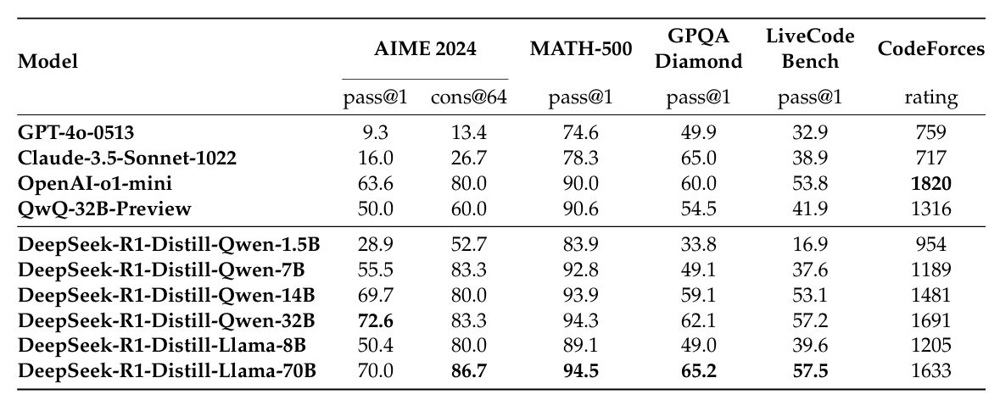
上图是DeepSeek-R1 蒸馏模型与其他可比模型在推理基准上的比较。 DeepSeek-R1-7B 模型在所有评估指标上全面超越了非推理模型 GPT-4o-0513，而 DeepSeek-R1-14B 则显著超越了当时开源的 QwQ-32B-Preview。这些结果证明了 DeepSeek-R1 蒸馏策略的高效性，并显示了其 32B 和 70B 模型在密集模型中设定了推理基准的新纪录。
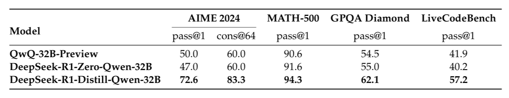
上图是蒸馏模型与纯 RL 训练模型的对比，DeepSeek-R1 蒸馏模型（DeepSeek-R1-Distill-Qwen-32B）在所有推理基准测试上的性能，都显著优于直接经过大规模 RL 训练的同参数量模型（DeepSeek-R1-Zero-Qwen-32B）。这表明蒸馏策略既经济又有效。
自知识蒸馏：
除此以外，DeepSeek-R1 的第三阶段（拒绝采样 + SFT）本质上也是一种自知识蒸馏（Self-Knowledge Distillation）。模型在强化学习后以自身（RL 收敛检查点）为教师，生成并精炼推理轨迹，再以这些高质量数据微调自身（SFT 更新参数），实现自我改进与能力提升。这一阶段主要有以下意义：
修复 RL 缺陷： 解决了纯 RL 模型 DeepSeek-R1-Zero 存在的可读性差和语言混合等问题。
增强通用能力： 通过纳入 200k 的通用数据，增强了模型的写作、问答和自我认知等非推理能力。
知识迁移基础： 800k 数据集成为后续蒸馏小模型（如 Qwen、Llama）的教师数据集，推动了跨模型能力迁移。
这一过程也印证了在 LLM 时代知识蒸馏正从单纯的“模型压缩”演化为推动模型的自我提升与技能迁移。
总结：
DeepSeek-R1 的蒸馏过程以高质量数据和严格拒绝采样为核心，通过单纯的监督微调（SFT）实现了从超大规模 MoE 模型向密集模型的高效能力迁移。其自知识蒸馏机制不仅修复了纯 RL 模型的缺陷，还显著提升了模型的推理与通用能力，展现了现代大模型蒸馏从“压缩”向“自我进化”的演化方向。
总结与思考#
本文对大型语言模型（LLMs）知识蒸馏技术作了系统介绍。本文首先阐明了在大模型时代下，源于专有模型的成本、隐私与领域适应性局限，以及开源模型对能力提升的迫切需求，共同推动了蒸馏技术的演进。本文将大模型蒸馏的核心作用归纳为能力增强、模型压缩与自我改进三个维度，并梳理了从目标引导、种子注入、知识生成到学生训练的四阶段通用蒸馏流程。
在技术方法层面，本文重点剖析了四类主流蒸馏范式：稀疏→稠密蒸馏（如MoE知识聚合）、多模态蒸馏（如LLaVA-KD中的跨模态对齐）、数据蒸馏（如Phi系列的“教科书”质量数据）以及与强化学习结合的蒸馏（如DPO）。通过对MiniLLM、LM-Cocktail、SDD等代表性算法的深入分析，本文揭示了从优化损失函数（如反向KL散度）、融合参数空间（如模型合并）到精炼数据质量（如SFT）等不同技术路径的实现细节与成效。还以Deepseek-R1的蒸馏为实例介绍了大模型蒸馏的实际应用。最后，本文从诸多维度介绍了蒸馏效果评估体系，涵盖了从任务性能、生成质量到知识相似性、鲁棒性与效率的综合考量。
基于本文所介绍的各项技术，我们可以清晰地观察到大模型蒸馏正在经历从“模型压缩”向“能力迁移与融合”的深刻演进，呈现出以下几个显著的发展趋势：
蒸馏目标从“模仿输出”转向“迁移能力”。
早期蒸馏强调在参数与计算资源受限环境下复制教师输出分布，而近期工作更强调保留或迁移高级能力（例如链式推理、偏好对齐）。不同任务应选择不同的蒸馏目标与训练策略以对齐能力，而不仅仅是分布拟合。
知识来源转向多源融合：传统的蒸馏是单向的“教师-学生”知识传递。LM-Cocktail通过在参数空间对预训练基础模型、目标任务微调模型及其他领域专家模型进行加权平均，能够有效恢复微调模型丧失的通用能力，稀疏→稠密蒸馏中对MoE多专家知识进行聚合，也印证了从多源知识中提炼精华是提升学生模型泛化性的有效途径。
任务与数据驱动的蒸馏设计日益重要: 数据蒸馏、合成语料与提示驱动的数据生成方法成为常态。DeepSeek-R1仅采用简单的SFT，但依靠RL优化后的教师模型生成并严格筛选的高质量推理数据集取得了卓越的蒸馏效果。Phi系列对“教科书质量”数据的专注也证明了这一点。数据质量与多样性在蒸馏中或许比单纯的算法改进更为关键。
跨范式融合：KD + RL + 自蒸馏: 将蒸馏与强化学习（或偏好学习）结合可以同时传递教师的行为与任务回报信号；自蒸馏（教师自身生成并再用于微调）则为模型提供低成本的自我改进路径。联合损失、奖励塑形、直接偏好优化等方法代表了蒸馏与行为对齐技术融合的方向。
知识粒度从“全局耦合”转向“解耦对齐”: 这种解耦的范式允许学生模型针对性地学习教师的不同知识侧面（如事实知识、推理能力、多模态关联），减少了不同语义信息的相互干扰，使得知识迁移更加明确和高效。
损失函数的权衡（mode-seeking vs mode-covering）： 生成任务中，正向 KL（mode-covering）往往迫使学生去拟合长尾低概率模态，反而降低生成质量；反向 KL（mode-seeking）及其他倾斜损失被证明更利于准确、连贯的生成。
评估指标向多维可靠性扩展： 除了任务性能外，研究社区越来越重视校准（ECE）、生成分布距离（MAUVE）、多样性（distinct-n）、一致性（response consistency）与鲁棒性（对抗、OOD）等评价维度，反映出对蒸馏后模型可靠性与可部署性的更高要求。
参考文献#
[1] Xu X, Li M, Tao C, et al. A survey on knowledge distillation of large language models[J]. arXiv preprint arXiv:2402.13116, 2024.
[2] Gu Y, Dong L, Wei F, et al. Minillm: Knowledge distillation of large language models[J]. arXiv preprint arXiv:2306.08543, 2023.
[3] Liu X, Hu L, Bailis P, et al. Online speculative decoding[J]. arXiv preprint arXiv:2310.07177, 2023.
[4] Kim G, Chu G, Yang E. Every Expert Matters: Towards Effective Knowledge Distillation for Mixture-of-Experts Language Models[J]. arXiv preprint arXiv:2502.12947, 2025.
[5] Xue F, He X, Ren X, et al. One student knows all experts know: From sparse to dense[J]. arXiv preprint arXiv:2201.10890, 2022.
[6] Cai Y, Zhang J, He H, et al. Llava-kd: A framework of distilling multimodal large language models[J]. arXiv preprint arXiv:2410.16236, 2024.
[7] Zhang B, Ma H, Ding J, et al. Distilling implicit multimodal knowledge into large language models for zero-resource dialogue generation[J]. Information Fusion, 2025, 118: 102985.
[8] Fang L, Yu X, Cai J, et al. Knowledge distillation and dataset distillation of large language models: Emerging trends, challenges, and future directions[J]. arXiv preprint arXiv:2504.14772, 2025.
[9] Xu H, Zhu Q, Deng H, et al. KDRL: Post-Training Reasoning LLMs via Unified Knowledge Distillation and Reinforcement Learning[J]. arXiv preprint arXiv:2506.02208, 2025.
[10] Guo D, Yang D, Zhang H, et al. Deepseek-r1: Incentivizing reasoning capability in llms via reinforcement learning[J]. arXiv preprint arXiv:2501.12948, 2025.
[11]Yang C, Zhu Y, Lu W, et al. Survey on knowledge distillation for large language models: methods, evaluation, and application[J]. ACM Transactions on Intelligent Systems and Technology, 2024.
[12]Lee S, Zhou J, Ao C, et al. Quantification of Large Language Model Distillation[J]. arXiv preprint arXiv:2501.12619, 2025.
[13]Wortsman M, Ilharco G, Gadre S Y, et al. Model soups: averaging weights of multiple fine-tuned models improves accuracy without increasing inference time[C]//International conference on machine learning. PMLR, 2022: 23965-23998.
[14]Luo S W C L Y. Scale decoupled distillation[J]. arXiv preprint arXiv:2403.13512, 2024.